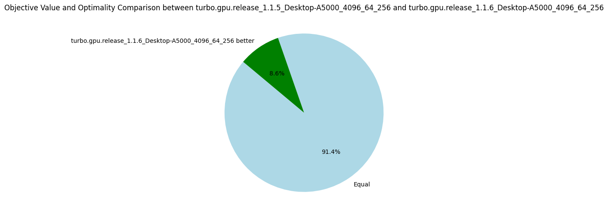
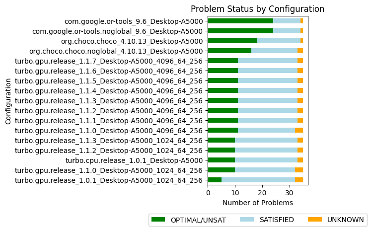
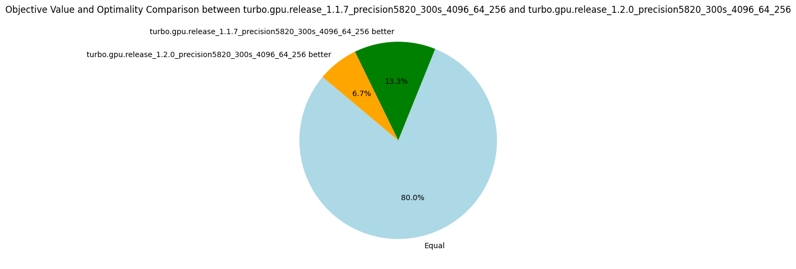

Lattice Land
Hello! You just arrived in lattice land! Lattice land is a collection of C++ libraries compatible with NVIDIA CUDA framework. Most of the libraries implement abstract domains for constraint reasoning a new kind of data structure based on abstract interpretation, lattice theory and constraint reasoning. This is a book presenting our research project, the involved research papers and the code documentation.
This project is available on github.
API Documentation
- cuda-battery: Memory allocators, vector, utilities and more which run on both CPU and GPU (CUDA). See also the chapter CUDA-Battery Library.
- lala-core: Core definitions of the formula AST and abstract domain.
- lala-parsing: Utilities to parse combinatorial formats including flatzinc (.fzn) and XCSP3 (.xml).
- lala-pc: Propagator completion abstract domain representing a collection of refinement functions. It implements propagators, an essential component of constraint solver.
- lala-power: Abstract domains representing disjunctive collections of information. It includes the search tree and branch-and-bound.
- turbo: Abstract constraint solver building on all other libraries.
- lattice-land.github.io: The repository hosting this book and the libraries documentation.
Introduction
The main objective of the CUDA battery library is to make it easier to develop software fully executing on the GPU. This is in contrast to applications where the CPU is the "director", and the GPU is only there to execute small kernels performing specific parallel tasks. We want to have the whole computation on the GPU when possible. Why you asked? Because it is more efficient as we avoid round-trips between CPU and GPU; although calling a kernel is very fast, the memory transfers are still costly. In the research project lattice-land, we also explore pure GPU computation as a new paradigm where many small functions collaborate in parallel to reach a common goal.
Developing systems in CUDA is a daunting task because the CUDA API is reminiscent of C programming, and it lacks modern C++ idioms and data structures. For instance, memory allocations and deallocations are managed by malloc/free variants, arrays are pointers and we do not have access to the C++ STL. Moreover, due to the specificities of the CUDA API, it is usually difficult to program a single function working on both the CPU and the GPU. Although it is rarely possible to have the exact same algorithm on both CPU and GPU, there are often algorithmic components that are shared. Having them both on CPU and GPU can help to verify the parallel version produces the same result as the sequential version, and it also allows us to benchmark CPU vs GPU.
The cuda-battery library reimplements basic data structures from the STL in a way such that the same code runs on both CPU and GPU.
One of the only technical differences between CPU and GPU is memory allocation.
To overcome this difference, we provide various allocators that allocate memory in the CPU memory, unified memory, and GPU global and shared memory.
The idea is then to parametrize your classes (through a C++ template) with an allocator type and, depending on whether you run your algorithm on the CPU or GPU, to instantiate it with a suited allocator type.
Among the supported data structures, we have vector, string, variant, tuple, unique_ptr, shared_ptr, a variant of bitset and many utility functions.
In addition to the STL, we provide an abstraction of the memory accesses to enable non-atomic (sequential) and atomic (parallel) read and write operations.
The memory abstraction is necessary when writing code working on both GPU and CPU, but also when writing GPU parallel code that can work in global and shared memory, and at the thread, block, grid and multi-grid level.
This library aims to be generic and usable in different kind of projects, but when a design decision needs to be made, it will be influenced by the needs of the project lattice-land.
Everything is under the namespace battery::.
The Doxygen documentation is available here.
Due to lack of time, these are often partial implementation of their STL counterpart, and there are sometimes (documented) differences.
NVIDIA is developing libcudacxx, a version of the standard C++ library compatible with GPU, and with extensions specific to CUDA.
cuda-battery can be seen as an extension of libcudacxx, and we intend to remove the data structures proposed here as soon as they become available in libcudacxx.
Another well-known library is thrust, but it does not share the same goal since it hides the parallel computation inside the data structure, e.g. reduce on a vector is automatically parallelized on the GPU.
Note that this tutorial does not introduce basic CUDA concepts: it is for (possibly beginners) CUDA programmers who want to simplify their code. For an introduction to CUDA, you can first refer to this tutorial. Finally, the full code of all examples given here is available in a demo project.
Transferring data from the CPU to the GPU
One of the first tasks a CUDA programmer is facing is to transfer data from the CPU to the GPU.
Using this library, it is very straightforward, and it is always the same scheme.
To illustrate the concepts of this library, we implement a map(v, f) function which applies a function f to all elements of the sequence v in-place.
We firstly need to transfer the data v to the GPU using managed memory, and it is as simple as that:
int main() {
std::vector<int> v(1000, 50);
battery::vector<int, battery::managed_allocator> gpu_v(v);
return 0;
}
Now we must pass gpu_v to a CUDA kernel.
However, there is a slight technical issue due to the weird parameters passing semantics of CUDA kernel (__global__ function): we must pass primitive types or pointers to the functions.
Indeed, trying to pass an object by reference or copy is undefined behavior.
This is only a restriction on __global__ functions, and once inside the kernel, passing by reference or copy works well (when calling __device__ functions).
You could simply pass the data as kernel<<<1,1>>>(gpu_v.data(), gpu_v.size()), but you lose all the advantages of vector when programming in the kernel.
The solution is to wrap gpu_v inside a pointer, which we can still do the C++ way using unique_ptr:
using mvector = battery::vector<int, battery::managed_allocator>;
__global__ void map_kernel(mvector* v_ptr) {
mvector& v = *v_ptr;
// ... Compute on `v` in parallel.
}
void map(std::vector<int>& v) {
auto gpu_v = battery::make_unique<mvector, battery::managed_allocator>(v);
map_kernel<<<256, 256>>>(gpu_v.get());
CUDAEX(cudaDeviceSynchronize());
// Transfering the new data to the initial vector.
for(int i = 0; i < v.size(); ++i) {
v[i] = (*gpu_v)[i];
}
}
Due to the C++ RAII idiom, the managed memory of both the GPU unique_ptr and mvector is automatically freed when leaving the scope of the function.
Importantly, the memory allocated on the CPU must be freed by the CPU, even if it is accessible by the GPU, and vice-versa.
But you should not encounter this issue if you use this idiom to pass data from the CPU to the GPU.
CMake CUDA Project
In order to compile and test the code presented above, you will need to add the headers of this library to nvcc.
nvcc -I cuda-battery/include demo.cu
We prefer to delegate the management of dependencies to CMake, a build automation tool.
However, creating a CMake project for hybrid CPU/GPU code is not an easy task, and we provide a demonstration CMake project in cuda-battery/demo.
You can start your own project by copying the demo folder and modifying the name of the project inside the file CMakeLists.txt.
To compile and run this project, you can write:
cd cuda-battery/demo
mkdir -p build/gpu-debug
cmake -DCMAKE_BUILD_TYPE=Debug -Bbuild/gpu-debug
cmake --build build/gpu-debug
./build/gpu-debug/demo
It compiles the demo project in debug mode using the GPU compiler (nvcc), along with the unit tests (using the Google testing framework GTest).
You can also compile it in release mode by simply changing debug to release in the previous commands.
To run the tests, the command ctest can be used as follows:
ctest --test-dir build/gpu-debug/
Among the characteristics of this project:
- Files have the
.cppextension instead of the.cuextension. - It compiles code for the native GPU architecture by default (so for the GPU of the computer you are compiling your code on).
This can easily be changed if you are cross-compiling by defining the flag
CMAKE_CUDA_ARCHITECTURESat the configuration stage:
cmake -DCMAKE_CUDA_ARCHITECTURES=70 -DCMAKE_BUILD_TYPE=Release -Bbuild/gpu-release
- Several useful options inherited from cuda-battery (enabling C++20 and constexpr extension).
- A testing framework where you can write your CPU tests using Google Test framework (see
demo/tests/demo_test.cpp) and your hand-made GPU tests (seedemo/tests/demo_test_gpu.cpp). - Moreover, when testing GPU code, we verify there is no memory leaks or some data races (using
compute-sanitizer).
We have documented the CMakeLists.txt so you can adjust it to your own project.
In-Kernel Memory Allocation
The typical way to allocate data structures shared by all threads or blocks in a CUDA kernel is to get all the memory allocations done before the kernel starts. However, when developing a larger CUDA kernel, it is frequent to rely on intermediate structures that are only temporary and are deleted before the end of the kernel. It might be difficult, or at best inconvenient, to allocate everything before the start of the kernel. Moreover, to follow good software engineering practice, these temporary structures should be hidden from the user of the kernel.
Thread-local Memory
Thread-local memory is a chunk of memory that is only accessed by a single thread. This is the default allocation mode when declaring a variable in CUDA kernel, hence it does not need any support from this library.
Block-local Memory
Block-local memory is a chunk of memory that is only accessed by the threads of a single block. To avoid any ambiguity: "block-local memory" is conceptual and might reside in global memory; it is not necessarily in shared memory.
A simple use-case is when blocks need to work on different copies of an original array.
Suppose *v_ptr is an array shared by all blocks.
In the following kernel, we show how to use battery::make_unique_block to copy *v_ptr into a block-local vector v_block.
using gvector = battery::vector<int, battery::global_allocator>;
__global__ void block_vector_copy(mvector* v_ptr) {
battery::unique_ptr<gvector, battery::global_allocator> v_block_ptr;
gvector& v_block = battery::make_unique_block(v_block_ptr, *v_ptr);
// Now each block has its own local copy of the vector `*v_ptr`.
// ...
// We must synchronize the threads at the end, in case the thread holding the pointer in `unique_ptr` terminates before the other.
cooperative_groups::this_thread_block().sync(); // Alternatively, `__syncthreads();`
}
Without this facility, we would need to initialize n copies of the vector in the host code and pass them as parameters to the kernel.
Finally, the function make_unique_block synchronizes all threads of the current block before returning, therefore v_block is directly usable by all threads.
Before you use this technique, keep reading because you might need to increase the size of the heap and stack.
Avoiding Obscure CUDA Runtime Errors
Developing an entire system within a single kernel can easily lead to CUDA runtime error due to overflow of the allowed heap and stack memory. The heap memory is by-default limited to 8 MB for allocations taking place in the kernel. If you allocate more than 8 MB, which is not very difficult, you will run into an error of the style "CUDA runtime error an illegal memory access was encountered". In that case, you must increase the size of the heap, and this can be done as follows:
// Multiply by 10 the default value, so now we have 80MB.
void increase_heap_size() {
size_t max_heap_size;
cudaDeviceGetLimit(&max_heap_size, cudaLimitMallocHeapSize);
CUDAE(cudaDeviceSetLimit(cudaLimitMallocHeapSize, max_heap_size*10));
cudaDeviceGetLimit(&max_heap_size, cudaLimitMallocHeapSize);
printf("%%GPU_max_heap_size=%zu (%zuMB)\n", max_heap_size, max_heap_size/1000/1000);
}
int main() {
increase_heap_size();
auto vptr = battery::make_unique<mvector, battery::managed_allocator>(100000, 42);
auto ptr = vptr.get();
block_vector_copy<<<256, 256>>>(ptr);
CUDAEX(cudaDeviceSynchronize());
}
For the stack, which is allocated per-thread, the problem can quickly arrive if you have many function calls and local variables. In that case you can increase the size of the stack as follows:
void increase_stack_size() {
size_t max_stack_size = 1024;
CUDAE(cudaDeviceSetLimit(cudaLimitStackSize, max_stack_size*10));
cudaDeviceGetLimit(&max_stack_size, cudaLimitStackSize);
printf("%%GPU_max_stack_size=%zu (%zuKB)\n", max_stack_size, max_stack_size/1000);
}
For information, the stack frames are stored in global memory, but the compiler will try its best to place them in the registers and caches when possible.
Grid-local Memory
Similarly to the previous section, we sometimes wish to initialize, inside the kernel, data that is shared by all blocks.
Once again, we suppose to have an original array *v_ptr that we wish to copy, but per-grid and not per-block.
__global__ void grid_vector_copy(mvector* v_ptr) {
battery::unique_ptr<gvector, battery::global_allocator> v_copy_ptr;
gvector& v_copy = battery::make_unique_grid(v_copy_ptr, *v_ptr);
// `v_copy` is now accessible by all blocks.
// ...
// Same as with block-local memory, we want to guard against destructing the pointer too early.
cooperative_groups::this_grid().sync();
}
To synchronize among threads, both make_unique_block and make_unique_grid rely on cooperative groups.
In the case of make_unique_grid, CUDA requires the kernel to be launched with a different syntax:
int main() {
increase_heap_size();
auto vptr = battery::make_unique<mvector, battery::managed_allocator>(100000, 42);
auto ptr = vptr.get();
void *kernelArgs[] = { &ptr }; // be careful, we need to take the address of the parameter we wish to pass.
dim3 dimBlock(256, 1, 1);
dim3 dimGrid(256, 1, 1);
cudaLaunchCooperativeKernel((void*)grid_vector_copy, dimGrid, dimBlock, kernelArgs);
CUDAE(cudaDeviceSynchronize());
return 0;
}
I am not sure why the syntax is different, but since it is a fairly recent feature, it might be improved in future releases.
Multi-grid Memory
For now, we do not support multi-grid memory allocation.
Shared Memory Allocator
We show how to use shared memory using a memory pool allocator.
using pvector = battery::vector<int, battery::pool_allocator>;
__global__ void map_kernel_shared(mvector* v_ptr, size_t shared_mem_capacity) {
// I. Create a pool of shared memory.
extern __shared__ unsigned char shared_mem[];
battery::unique_ptr<battery::pool_allocator, battery::global_allocator> pool_ptr;
// /!\ We must take a reference to the pool_allocator to avoid copying it, because its copy-constructor is not thread-safe! (It can only be used by one thread at a time).
battery::pool_allocator& shared_mem_pool = battery::make_unique_block(pool_ptr, static_cast<unsigned char*>(shared_mem), shared_mem_capacity);
// II. Transfer from global memory to shared memory.
battery::unique_ptr<pvector, battery::global_allocator> shared_vector;
size_t chunk_size = chunk_size_per_block(*v_ptr, gridDim.x);
auto span = make_safe_span(*v_ptr, chunk_size * blockIdx.x, chunk_size);
pvector& v = battery::make_unique_block(shared_vector, span.data(), span.size(), shared_mem_pool);
// III. Run the algorithm on the shared memory.
block_par_map(v, [](int x){ return x * 2; }, blockDim.x, threadIdx.x);
__syncthreads();
// IV. Transfer back from shared memory to global memory.
for(int i = threadIdx.x; i < v.size(); i += blockDim.x) {
(*v_ptr)[chunk_size * blockIdx.x + i] = v[i];
}
}
We initialize one pool allocator per-block using the same technique as shown before.
However, we must be careful to take the pool_allocator by reference because its copy-constructor is not thread-safe; similarly to shared_ptr it maintains a shared counter to its memory pool.
Since memory allocation is done by only one thread anyway, it does not make sense to have multiple copies of this allocator.
The next step is to transfer the vector to the shared memory.
Each block works on a chunk of the initial array.
Therefore, we do not want to move the whole array in shared memory, but only the part of interest for that block.
To achieve that, we compute the size of the chunk using chunk_size_per_block and create a view of the vector covering only that chunks.
We use std::span to model the view.
Note that we can use the STL std::span because all its methods are constexpr, and we have the NVCC flag --expt-relaxed-constexpr inherited from cuda-battery.
We then copy this span into the vector v which is in shared memory.
The algorithm block_par_map is then called on v for each block.
The last step is to transfer the memory from the shared memory to the global memory.
After each block finished computing, the map function has been applied to each element of the initial vector.
A Word of Caution on Shared-State Parallelism
Developing a parallel algorithm is relatively easy as long as threads read and write independent memory chunks. Such an algorithm is referred as embarrassingly parallel. As a rule of thumb, it is best if you can stay within this paradigm. For instance using map-reduce operations, where all threads work on separate memory cells during the map operation, and then a single thread performs a reduction of all temporary results obtained. Sometimes this is not possible, or you want to get to the next level to get better performance. Beware, designing correct and efficient parallel algorithms with threads communicating in a shared memory system is a whole new world. We cannot even scratch the surface here, and this library does not provide much support for it. Nevertheless, it is possible to write such algorithms in CUDA using atomics and synchronization primitives. To use them well, I would advise to take a class (or read a book) on parallel programming and memory consistency models.
Abstract Interpretation Workshop
Hello! During a full week in June, we gather together to study abstract interpretation from its theoretical foundation (lattice theory) to its latest applications (constraint programming, neural network verification).
Abstract interpretation is a formal theory of software verification invented by Radhia and Patrick Cousot in the seventies to detect bugs in programs statically ("at compile-time") and directly on the source code (not on a model of the program). The main contribution of abstract interpretation is to overapproximate the semantics of a program: violations of properties are always discovered, but we sometimes obtain false-positives. The mathematical framework of abstract interpretation is rich and the papers in the field are complicated for beginners. During this week, we take our time to understand and digest the main ingredients of abstract interpretation.
Further, this framework of approximation turns out to be very general and goes beyond program verification. It was recently applied to constraint reasoning and neural network verification, two topics we also discuss during the week.
PS: Dear PhD students, this workshop does not grant ECTS (but you will still learn something!).
Registration
To have an idea if the rooms are big enough and to avoid running out of coffee, please register here.
Schedule
Week of the 17th June 2024. The coffee (from Jolt coffee shop, mmh, delicious) and pastries will be offered every morning :-) For the brave ones coming to the practice sessions on Monday and Tuesday, coffee and pastries are offered again!
- Monday:
- Tuesday:
- Wednesday (MNO 1.050):
- 9:00-10:30: Introduction to Abstract Interpretation, Pierre Talbot, slides.
- 11:00-13:00: Introduction to Constraint Programming, Manuel Combarro, slides, N-queens.mzn, N-queens-alldifferent.mzn.
- Thursday (MNO 1.040):
- Friday (MNO 1.010):
Speakers


Pierre Talbot (research scientist) ▪ Bruno Teheux (assistant professor) ▪ Thibault Falque (postdoctoral researcher) ▪ Manuel Combarro (PhD candidate) ▪ Yi-Nung Tsao (PhD candidate)
Detailed Program
Find below a detailed description of each session with keywords.
Introduction to Lattice Theory
Partial order ▪ Lattice ▪ Monotone functions ▪ Cartesian product ▪ Complete lattice ▪ Fixpoint ▪ Galois connection
Recommended prerequisite: None.
The goal of these two lectures is to have a first grasp of the mathematical theory underlying abstract interpretation. On the first day, we study partial order and lattices, properties of functions over lattices and several lattice constructions such as products and powerset. On the second day, we overview more advanced concepts such as fixpoint and Galois connection which are particularly useful in abstract interpretation.
Introduction to Abstract Interpretation
Syntax ▪ Reachability semantics ▪ Chaotic iterations ▪ Abstract domains ▪ Widening ▪ Reduced products
Recommended prerequisite: Introduction to Lattice Theory.
The goal is to understand how we can use lattice theory to overapproximate the semantics of program and certify the absence of bugs. We start by reviewing existing verification techniques (e.g., model checking, theorem proving) and discuss the position of abstract interpretation in this landscape.
Introduction to Constraint Programming
Constraint satisfaction problem ▪ Constraint modelling ▪ Propagation ▪ Consistency ▪ Search ▪ Minizinc
Recommended prerequisite: None.
Constraint programming is a powerful paradigm to model problems in terms of constraints over variables. This declarative paradigm solves many practical problems including scheduling, vehicle routing or biology problems, as well as more unusual problems such as in musical composition. Constraint programming describes what the problem is, whereas procedural approaches describe how a problem is solved. The programmer declares the constraints of its problem, and relies on a generic constraint solver to obtain a solution. In this talk, we formally define what is a constraint satisfaction problem (CSP) and the underlying solving procedure. Further, this session will be interactive and time will be allocated so you can try to model and solve your own combinatorial problem in the Minizinc constraint modelling language!
Abstract Constraint Programming
Abstract satisfaction ▪ Solver cooperation ▪ Propagator completion ▪ Table abstract domain
Recommended prerequisites: Introduction to Lattice Theory, Introduction to Abstract Interpretation, Introduction to Constraint Programming.
This talk presents a recent research field!
Combinatorial optimization is a large field of research aiming at finding (best) solutions of logical formulas. There are many research communities working separately on reasoning procedures that work well on different kinds of problems (essentially depending on the underlying domain of discourse and logic predicates). For instances, linear programming solvers are the best to solve linear equations over real numbers but has more difficulty over integers and are unable to deal with non-linearity. SAT solvers can solve very large Boolean formulas but problems can be hard to express compactly when only Boolean variables are available. Constraint programming is a general approach to constraint solving but this generality makes it slower the classes of problem mentioned above. The issue is that each approach is based on different theoretical foundation which makes solver cooperation hard to achieve. We believe abstract interpretation can provide a unified theory of constraint reasoning by abstracting each solving approach in abstract domains, that can then be combined with different products. The first step is to cast the theory of each approach in the framework of abstract interpretation. It has already been started for linear solvers, SAT and constraint programming solvers. In this talk, we focus on the constraint programming approach and present our latest research on this topic.
Octagon Abstract Domain
Octagon ▪ Temporal constraints ▪ Scheduling problems
Recommended prerequisites: Abstract Constraint Programming.
An octagon is an abstract domain able to reason over conjunction of temporal constraints which are restricted linear equation of the form ±x ± y ≤ k where x,y are variables and k a constant.
Octagons offer a particularly interesting compromise between expressiveness and efficiency since they can compute the solutions of a set of temporal constraints in cubic time using the Floyd Warshall shortest path algorithm.
We explain octagon in the context of abstract constraint programming and show how it can enhance solver performance, particularly in scheduling problems.
We also discuss a particular case of reduced product between the propagator completion and octagon abstract domains.
Introduction to Neural Network Verification by Abstract Interpretation
Neural network verification ▪ Robustness metrics ▪ Zonotope abstract domain
Recommended prerequisites: Introduction to Lattice Theory, Introduction to Abstract Interpretation.
This talk presents a recent research field!
Neural networks have become powerful and popular machine learning techniques in recent years. There are many safety-critical applications based on neural networks, such as autonomous driving systems. However, they can be vulnerable to adversarial examples, which are instances with imperceptible perturbations that can lead to incorrect results from neural networks. Therefore, in these safety applications, if any adversarial examples exist, the neural network may make wrong decisions, potentially causing serious consequences. Nowadays, many algorithms and frameworks have been proposed to verify the robustness of neural networks. In this talk, we will introduce how to use abstract interpretation to evaluate the robustness of neural networks. Additionally, we will provide a simple example to demonstrate how to construct a zonotope, which is one of the abstract domains, to verify neural networks.
Parallel Lattice Programming
GPU ▪ Asynchronous iterations ▪ Concurrent constraint programming ▪ Memory consistency ▪ Parallel graph algorithms
Recommended prerequisites: Introduction to Lattice Theory.
This talk presents a recent research field!
We introduce a programming language in which data are lattices, programs are monotone functions, and the execution model is a fixpoint loop. The peculiarity of this language is to have a native parallel operator (P || Q) but no sequence operator (P;Q). Due to its lattice execution model, data races are natively supported (they do not modify the final results), no deadlock can occur, and the implementation is lock-free. We study several algorithms that can be written in this paradigm including a sorting algorithm and the Floyd-Warshall shortest path algorithm. We discuss how this paradigm was applied to write Turbo, a constraint solver based on abstract interpretation that fully executes on the GPU.
References
Here are some references relevant to the various sessions:
Books
- Davey, Brian A., and Hilary A. Priestley. Introduction to Lattices and Order. Cambridge University Press, 2002.
- Cousot, Patrick. Principles of Abstract Interpretation. MIT Press, 2021.
- Apt, Krzysztof. Principles of Constraint Programming. Cambridge University Press, 2003.
- Aws Albarghouthi, Introduction to Neural Network Verification. Foundations and Trends® in Programming Languages (2021).
- Changliu Liu, Tomer Arnon, Christopher Lazarus, Christopher Strong, Clark Barrett and Mykel J. Kochenderfer, Algorithms for Verifying Deep Neural Networks. Foundations and Trends® in Optimization (2021).
Selected Papers
- D'Silva, Vijay, Leopold Haller, and Daniel Kroening. Abstract Satisfaction. POPL 2014.
- Miné, Antoine. The Octagon Abstract Domain. Higher-order and symbolic computation (2006).
Our Papers
- Manuel Combarro Simón, Pierre Talbot, Grégoire Danoy, Jedrzej Musial, Mohammed Alswaitti, and Pascal Bouvry. Constraint Model for the Satellite Image Mosaic Selection Problem. CP 2023.
- Talbot, Pierre, Frédéric Pinel, and Pascal Bouvry. A Variant of Concurrent Constraint Programming on GPU. AAAI 2022.
- Talbot, Pierre, Éric Monfroy, and Charlotte Truchet. Modular Constraint Solver Cooperation via Abstract Interpretation. Theory and Practice of Logic Programming (2020).
- Talbot, Pierre, David Cachera, Eric Monfroy, and Charlotte Truchet. Combining Constraint Languages via Abstract Interpretation. ICTAI 2019.
Sponsors
This project occurs in the context of the project COMOC (ref. C21/IS/16101289), 2021-2025. We thank the Luxembourg National Research Fund (FNR) for this opportunity.
Turbo
(For a concise introduction to GPU programming, you can check out my tutorial and go through the slides; it is especially useful to know the CUDA vocabulary).
30 August 2023. Turbo is a constraint solver running entirely on the GPU with an architecture based on abstract domains. Intuitively, due to their complex architecture and dynamic data structures, constraint solvers seem to be a poor match for GPUs. Moreover, over the years, new solving techniques have been primarily developed within a sequential mindset, without consideration for parallel execution. The most successful approach to parallel constraint solving is embarrassingly parallel search (EPS) where the problem is decomposed into many subproblems that are solved independently on different cores. Although GPUs have thousands of cores, it is not reasonable to execute one subproblem per core. The primary reason is that a single core does not have its own cache. Cores are actually grouped in streaming multiprocessors (SMs), and all cores in one SM share the same cache (called L1 cache). The L1 cache is only 256KB on the most recent NVIDIA Hopper GPUs (which I don't have). A quick calculation shows why one subproblem per core is not a viable option. Suppose the domain of a variable is represented by an interval (the lightest you can do, it is more often represented by a set of intervals), hence 8 bytes, a store of 1000 variables takes 8KB of memory. Suppose an SM has 64 (integer) cores, then we need 64*8 = 512KB of cache to fit all the stores at once. We should also store the propagators, and although the stateless propagators can be shared among subproblems, it easily takes up dozens of KB; memory that will not be available for the stores. The threads will end up competing for the caches, and it will generate many memory transfers among the global memory, L2 cache and L1 cache. Memory transfers are usually the most costly operation, hence you try to avoid (or hide) them in a GPU; loading data from the global memory is about 10x slower than from the L1 cache. I am not saying it is impossible to do efficiently, but it seems quite complicated, especially when taking into account warps that are SIMD units of the GPUs (blocks of 32 threads), and thus must all have their data ready in the cache at the same time when executing. This is a hypothesis based on intuition and discussion with GPU experts, but it has not been verified experimentally.
Instead of relying on a "one subproblem per core" design that is so commonly used in parallel constraint solvers, we can execute one subproblem per SM. And parallelism within an SM is achieved by parallelizing propagation! It is worth mentioning that no attempt to parallelize propagation resulted in a faster solver in comparison to simply parallelizing the search. In fact, no modern solver parallelizes propagation. Because most solvers are designed for CPU, it seems that adapting an existing solver to work on GPU is doomed to fail. The design rationale of Turbo is to aim first at a simple but correct parallel design.
I write this technical journal to document my attempts to obtain an efficient GPU-based constraint solver named Turbo. Moreover, because I like my life to be (too) complicated, Turbo is also based on abstract interpretation and implements so-called abstract domains which are mathematical generalizations of the representation of constraints. Let's embark on this journey!
v1.0.1: Unoptimized Turbo
08 November 2023. We start this adventure with a functional but slow GPU solver. To make it work on the GPU, we had to simplify the architecture of mainstream CPU-based constraint solver in many regards. Let's start with the current design decisions behind Turbo:
- Pure GPU: From the beginning, we decided to develop Turbo entirely on the GPU, primarily to eliminate memory transfers between the CPU and GPU. We are also forced to design each component with a parallel mindset.
- Propagation: The propagation loop is based on the very first AC1 algorithm: we simply take the first N propagators, run them in parallel, then take the next N propagators, and so on until they are all executed, where N is the number of cores available in the current block. We repeat this operation in a fixed point loop until no change is detected anymore. This implies we do not have a queue of propagators to be woken up or any notion of events in the solver.
- Backtracking: It is based on full recomputation, each time we backtrack, we re-apply all the decisions from the root node; actually, from the root of the current EPS subproblem being solved.
- Embarrassingly parallel search: We dynamically create subproblems that are explored individually by GPU blocks, hence the parallel propagation only happens inside one block.
- Abstract domains: The solver architecture is based on abstract domains which encapsulate solving algorithms dedicated to a particular constraint language, similarly to theories in SMT. However, abstract domains are semantic objects while SMT theories are syntactic objects (and a formal connection exists between the two). Our opinion is that abstract domains are closer to the actual implementation code than SMT theories. Moreover, since a product of abstract domains is also an abstract domain, this framework offers promising perspectives for combining solving algorithms.
- No conflict learning: Conflicts require dynamic data structures to represent the implication graph, and memory allocation is quite costly on GPU, so we currently have no conflict learning.
- Lock-free: Although propagators are sharing the memory, we do not have locks on variables, and actually no lock at all (this is a lie: a single lock used for printing purposes).
- Formally correct: Parallel programming is hard and prone to bugs. The theory behind Turbo relies on lattice theory which enabled us to prove that our lock-free propagation loop is correct.
We have thrown away many optimizations considered essential in mainstream CPU-based constraint solvers. Incidentally, the GPU solver is simpler than a CPU solver, while obtaining similar performances; of course, when comparing to a pure CP solver without SAT learning. Back in 2021, our hypothesis was that drastically simplifying the solver design was necessary to implement a GPU solver and that it could be efficient. We implemented a prototype (Turbo) demonstrating it could work: we obtained similar performances between Turbo and Gecode (on a 6-cores CPU with 12 threads) on RCPSP. More importantly, we laid out the theory behind parallel constraint propagation on GPU and show that, despite the absence of locks, it yielded correct results. These findings were summarized in our AAAI 2022 paper.
For more than one year, I have been refactoring and extending this initial prototype in multiple ways. One goal has been achieved now and Turbo can solve MiniZinc model with two limitations: for now, it only supports integer variables, and all global constraints are decomposed into primitive constraints. The solver Turbo is part of a larger project called Lattice Land, which is a collection of libraries representing lattice data structures. The long-term goal is to be able to reuse these libraries outside of constraint solving, for instance in static analysis by abstract interpretation and in distributed computing using CRDT. The code of Turbo is the glue putting together the required libraries to solve a constraint problem. The new abstract domain design comes with a price: it is less efficient than the prototype. It was expected since the prototype could only handle a very small constraint language with limited architectural overhead. I will try to integrate one by one various optimizations and attempt to first reach the previous efficiency, and then go beyond it.
Benchmarking
To benchmark our progresses, I think it is reasonable to start with a set of easy instances (J30 benchmarks on RCPSP) and a set of harder instances (from MiniZinc competition 2022).
I have selected a subset of the MiniZinc competition benchmarks where I discarded models with set variables (unsupported by Turbo).
For a representative but quicker benchmarking, I selected 1 or 2 instances per problems, arbitrarily varying between small and large instances.
For RCPSP, I randomly selected 19 instances of the J30 dataset.
In the following table, I describe the problems of the benchmarking suite (diffn (1) indicates one occurrence of the global constraint, alldifferent (*) indicates the global constraint occurs in redundant or symmetry breaking constraints).
Description
- Wordpress: Assign software components to hardware units under some constraints.
- ACCAP: Airport check-in counter allocation problem (ACCAP) with fixed opening/closing times.
- Tower: Assign handsets to communication towers to maximize connection quality.
- Team: Make teams of players to maximize happiness and balancing.
- NFC: Network flow global constraint.
- Diameterc-mst: Diameter Constrained Minimum Spanning Tree.
- Stripboard: Layout for electrical components on stripboard: find the most compact layout.
- Blocks world: Find a path of minimum length from an initial configuration to a final configuration of the puzzle.
- Triangular: Puzzle.
- Generalized-peacable Queens: A variant of n-queens with several armies of queens.
- Roster Sickness: Assign employees to work shifts with expertise constraints.
- GFD Schedule: Productions of group of items in various facilities.
- RCPSP: Minimize makespan of tasks under resources constraints.
- Spot 5: Select a subset of photograph to be taken maximizing a weight.
| Problem | #Inst | Kind | Global Constraints | Shape |
|---|---|---|---|---|
| Wordpress | 1 | Allocation | None | Many sum()(). |
| ACCAP | 2 | Allocation | diffn (1) | Precedence constraints. |
| Tower | 1 | Allocation | None | |
| Team Assignment | 1 | Allocation | bin_packing_load, alldifferent (*), bin_packing (1*) | Sums of Boolean. |
| NFC | 1 | Graph | network_flow_cost | Equality/sum constraints. |
| Diameterc-mst | 1 | Graph | None | Many implications / disjunctions. |
| Stripboard | 2 | Packing | diffn (1), disjunctive (1), alldifferent (1*), strictly_decreasing (1*) | Many implications. |
| Blocks world | 1 | Planning | increasing (1), global_cardinality_closed | |
| Triangular | 2 | Puzzle | None | Sum constraints. |
| Generalized-peacable Queens | 1 | Puzzle | regular, global_cardinality (1), all_equal (1), value_precede_chain (1*), lex_lesseq (*) | Almost only global constraints. |
| Roster Sickness | 1 | Scheduling | None | Lexicographic optimization. |
| GFD Schedule | 1 | Scheduling | cumulative, at_most, nvalue | Many implications / disjunctions. |
| RCPSP | 18 | Scheduling | cumulative | Precedence constraints, disjunctions. |
| Spot 5 | 1 | Ad-hoc | table |
Analysis
The primary goal of our initial benchmarking session is to gauge how Turbo measures up against contemporary, state-of-the-art constraint solvers (spoiler: there's room for improvement). In order to assess the efficiency of Turbo, I compared it against Choco and Or-Tools:
- Turbo v1.0.1: C++/CUDA constraint solver without SAT clause learning and without global constraints.
- Choco v4.10.13: Java constraint solver without SAT clause learning and with global constraints.
- Or-Tools v9.6: C++ constraint solver with SAT clause learning and global constraints.
Since Turbo has no global constraint, I also benchmarked the two previous solvers on problem with decomposition of global constraints, named choco.noglobal and or-tools.noglobal below.
Turbo is developed to run on both CPU and GPU, although it is primarily optimized for GPU use.
We run on the CPU mainly for debugging and comparative efficiency analysis.
The machine on which I performed the benchmarks is a Dell Precision 5820 (desktop computer):
- CPU: Intel Core i9-10900X (3,7GHz, 4,7GHz Turbo, 10C, cache 19,25Mo, HT, 165W).
- RAM: 64 Go, 2 x 32 Go, DDR4 UDIMM.
- GPU: NVIDIA RTX A5000, 24Go, 64 streaming multiprocessors (8192 CUDA cores), 230W.
About the details of the experiments:
- Timeout: 5 minutes per instance (it is relatively small in order to quickly iterate and test new optimizations of Turbo).
- EPS (TurboGPU): generate 1024 subproblems (
-sub 10for "2^10").
Warning: Before we start, let's get something straight: the comparison between TurboGPU and other solver is relatively unfair. In particular, because of EPS, TurboGPU uses breadth-first search at the top of the tree, and thus sometimes can get better bounds, while the others use depth-first search and might stay stuck in the left part of the search tree longer. In contrast, on some problems, depth-first search allows TurboCPU to find a better bound because it goes deeper in the search tree. To be completely fair, we should enable parallelism for each solver since most of them support it. We don't because when you run a race, you don't try to overtake the 1th runner when you are at the back of the race, you first focus on overtaking the runner in front of you ;-)
Alright, let's go with the benchmarks, the full Jupyter notebook is available here. We first start by an overview:

The overall results are not surprising. When looking at Choco and Or-Tools, we might wonder if global constraints are worth the investment, especially when clause learning is activated (Or-Tools). In the following, we take a closer look at Choco and Or-Tools:


Here, we only compare the objective bounds and not the time needed to reach the best found objective. Back to Turbo, let's compare it to our its CPU-version and the baseline solvers:


For future references, it is interesting to have an average of some speed and memory metrics across all problems:
| Metrics | Average | Median |
|---|---|---|
| Nodes per second | 1246.77 | 35.07 |
| Fixpoint iterations per second | 10014.91 | 257.84 |
| Fixpoint iterations per node | 8.48 | 7.11 |
| IDLE SMs at timeout | 13 | |
| Propagators memory | 16.41MB | 13.07MB |
| Variables store memory | 167.78KB | 174.01KB |
| #Problems at optimality | 5 | |
| #Problems satisfiable | 27 | |
| #Problems unknown | 3 |
When comparing the number of nodes per second, we can see that TurboGPU explores around 5 to 10 times more nodes per second than TurboCPU; showing a "purely computational gain" when using the GPU. Just 5x to 10x quicker is actually not that much quicker considering we have 64 streaming multiprocessors, and indicate we are under-using the parallel capacities of the GPU. In the future, I'll benchmark how efficiently Turbo is using the GPU using the profiling tools of NVIDIA.

You might notice that on RCPSP, TurboCPU is actually better in terms of nodes per second. The reason is that the number of subproblems is not large enough, and some streaming multiprocessors become IDLE because no more problems can be consumed. On two problems, we have only one streaming multiprocessors working, meaning only 1/64 of the GPU is used at the end... We need to improve the EPS algorithm and the decomposition into subproblems.
Finally, let's look at the fixpoint iterations. On average, Turbo needs to execute each propagator 8 times before reaching a fixpoint, of course it depends on the problem:

To conclude this first benchmarking session, I found the results encouraging, especially when considering how primitive is the propagation loop. I think two important missing optimizations are:
- Preprocessing in the root node, potentially root nodes of each subproblem, to reduce the number of constraints and variables, and avoid useless propagation.
- Disable propagators that are entailed.
See you next time for more benchmarking!
v1.1.{0-1}: Preprocessing
27 December 2023. A simple definition of preprocessing is to prepare the constraint problem hence it can be solved more efficiently by the underlying solver.
The goal of preprocessing is usually to eliminate fixed variables, eliminate satisfied constraints and simplify constraints, for instance by propagating the constants.
In the context of GPU, there is an additional incentive to preprocessing: reducing the memory footprint in order to store the problem in the shared memory (L2 cache).
For now, most of the problems are too large to be entirely stored in shared memory (store of variables and propagators), but the variables can be entirely stored in the shared memory for around 30% of the problems considered.
We have implemented a simple preprocessing class called Simplifier (in lala-core).
After propagating the root node, the preprocessor performs the following simplifications:
- Replace all assigned variables by the constant they are assigned to.
- Create equivalence classes among variables (by detecting
x = yconstraints), select a representative variable in each class, and replace all occurrences of the variables in the equivalence classes by their representative variables. - Remove entailed constraints.
The preprocessing algorithm is in theory suitable for parallel execution on GPU, but it is currently executed on the CPU. The reason is that we want to reduce the problem size to store the variables in the shared memory. But we must decide in which memory to put the variables before we start the GPU kernel; hence we would need to launch the preprocessing in a kernel, to return the data to the CPU and relaunch another kernel with the right shared memory size. There is a solution using CUDA dynamic parallelism, but I did not take the time to explore it yet!
This simple preprocessing step doubles the raw efficiency of the solver as measured by the number of nodes explored per second. Indeed, reducing the problem leads to fewer propagators that need to be executed, which is observed by a reduction of the number of iterations to reach a fixpoint (-14% on average). But the additional speed is also explained by the variables store that has been cut by half on average and the propagators' memory decreased by 22%. It reduces the pressure on the L1 and L2 caches and more problems can be stored in the shared memory; in our case, one more problem can be stored in shared memory when simplifying.
| Metrics | Average | Δ v1.0.1 | Median | Δ v1.0.1 |
|---|---|---|---|---|
| Nodes per seconds | 2379.95 | +91% | 611.27 | +1742% |
| Fixpoint iterations per second | 12303.02 | +23% | 2273.83 | +882% |
| Fixpoint iterations per node | 7.31 | -14% | 5.9 | -17% |
| #Problems with IDLE SMs at timeout | 9 | 13 | ||
| Propagators memory | 12.65MB | -22% | 7.79MB | -40% |
| Variables store memory | 72.29KB | -57% | 84.1KB | -52% |
| #Problems at optimality | 10 | 5 | ||
| #Problems satisfiable | 22 | 27 | ||
| #Problems unknown | 3 | 3 |
v1.1.0b Increasing the number of subproblems
By default, the number of subproblems created is 1024 (2^10) (option -sub 10).
This choice is rather arbitrary, so I ran additional experiments to see if increasing that number could lead to better results.
The answer is that it is quite hard to choose a good generic number, but overall 4096 (2^12) subproblems gave better results and is the new default for the future versions.
| Metrics | Average | Δ v1.1.0 | Median | Δ v1.1.0 |
|---|---|---|---|---|
| Nodes per seconds | 2529.68 | +6% | 809.31 | +32% |
| Fixpoint iterations per second | 12449.48 | +1% | 3306.37 | +45% |
| Fixpoint iterations per node | 6.77 | -7% | 5.19 | -12% |
| #Problems with IDLE SMs at timeout | 7 | 9 | ||
| Propagators memory | 12.65MB | 0% | 7.79MB | 0% |
| Variables store memory | 72.29KB | 0% | 84.1KB | 0% |
| #Problems at optimality | 11 | 10 | ||
| #Problems satisfiable | 21 | 22 | ||
| #Problems unknown | 3 | 3 |
In particular, we see that increasing the number of subproblems to 4096 contributes to a better average of nodes per second and to solving one more problem to optimality. With more subproblems, the advantage is not as clear, but it is definitely an experiment to try again on future versions of Turbo.

v1.1.1 Partial evaluation
The version 1.1.1 brings partial evaluation of the logical formulas, essentially by aggregating constants and rewriting constraints with fewer operators.
We fully evaluate the expressions without variables, using distributivity laws for addition and multiplication (e.g. in 4 + x + 1 we evaluate 4 + 1).
We apply some standard simplification laws:
- Propagating neutral and absorber elements (using identity and annihilator laws) of conjunction, disjunction, implication, equivalence, addition, subtraction, multiplication and division.
- Eliminating double arithmetic and logical negations.
We also have a bunch of rules to simplify constraints that are generated by the MiniZinc to FlatZinc conversion (let eval be a function evaluating the constant expressions):
- Detecting equalities:
x + (-y) == 0is rewritten tox == y. - Detecting inequalities:
x + (-y) != 0is rewritten tox != y. - Aggregating constants:
x + i != jis rewritten tox != eval(j - i). - Eliminating variable negation:
-x != jis rewritten tox != eval(-j)(and similarly forj != -x).
These rules could be generalized in the future.
This simple optimization leads to another big leap in the number of nodes per second and reduces significantly the memory footprint of propagators. For the first time, there is a problem (nfc_24_4_2) that can be entirely stored in the shared memory (store of variables and propagators). However, the impact of being entirely in the shared memory is not very impressive, with "only" 42% more nodes per second in comparison to v1.1.0b, knowing the average is at 62%. We should validate experimentally if manually managing the shared memory is really worth it, or if the default caching policy of CUDA does a good enough job.
| Metrics | Average | Δ v1.1.0b | Median | Δ v1.1.0b |
|---|---|---|---|---|
| Nodes per second | 4087.42 | +62% | 976.72 | +21% |
| Fixpoint iterations per second | 17837.83 | +43% | 3878.13 | +17% |
| Fixpoint iterations per node | 6.79 | +0.3% | 5.17 | -0.4% |
| #Problems with IDLE SMs at timeout | 8 | 7 | ||
| Propagators memory | 10.34MB | -18% | 7.39MB | -5% |
| Variables store memory | 72.29KB | 0% | 84.1KB | 0% |
| #Problems at optimality | 11 | 10 | ||
| #Problems satisfiable | 22 | 22 | ||
| #Problems unknown | 2 | 3 |
Overall standing
v1.1.2: (Dis)equality Propagator
07 March 2024. When developing Turbo, I try to keep the number of propagators minimal as it reduces the code and eases the maintenance.
The propagators are represented in an abstract domain called propagators completion (PC) which is essentially an encapsulation of a traditional propagators-based constraint solver inside an abstract domain.
One of the peculiarities is that PC does not contain the store of variables but is parametrized by another abstract domain A that provides access to the variables.
A can be an array of integer intervals or bitsets, as seen in traditional constraint solver, but can be more complicated such as an octagon abstract domain.
This generic design also allows us to parametrize PC by the Cartesian product of any abstract domains, for instance to obtain mixed domains such as interval of integers and interval of floating-point numbers.
It means that we have a single propagator for the constraint x + y <= 10 where x is an integer variable and y a real variable; this is in theory because Turbo does not support floating-point variables yet.
The direct consequence of this abstraction is that we must develop generic propagator functions that do not know exactly the shape of the variables' domains.
To achieve that, I have a lattice-based propagator of the form t >= u where t is any term (e.g. x + y or S ∪ T), u is a lattice element such as an interval and >= is the associated lattice ordering.
Let project(a, x) be a function of the abstract domain a projecting the domain of the variable x and let's suppose the type of project(a, x) is the same as the type of u.
For instance, if I write x + y >= [0..5], it means that project(a, x) + project(a, y) should be included in the interval [0..5] according to the interval ordering.
From a logical perspective, it implements the constraints x + y >= 0 and x + y <= 5.
Using some generic lattice operations (essentially projection, ordering and join operator), we can perform the propagation of this constraint.
If the underlying domain is an interval, it will achieve bound consistency, and if it is a bitset, it should achieve arc consistency; I say "should" because I did not formally prove that yet.
This lattice-based propagator is quite compact because it can represent many primitive constraints, for instance:
x == yisx - y >= [0..0].x != yisx - y >= [1.. ∞] \/ x - y >= [-∞..-1].x + y >= 1isx + y >= [1..∞].- ...
Therefore, we do not need one propagator per arithmetic comparison operator, but one propagator for all of them. However, this minimalism is problematic for the disequality propagator which is represented by a disjunction. Instead, we have implemented a dedicated propagator for disequality which does not rely on subtraction and disjunction. By duality, this propagator can also be used for propagating equality which avoids a subtraction operation. More fundamentally, for lattices that are pseudo-complemented (usually domains that support holes such as bitset), the disequality propagator is stronger than its disjunctive decomposition.
Interestingly, this propagator does not help to explore more nodes per second, but it finds better objective values for more problems (see the pie diagram below). The number of nodes per second is due to an increase in the number of fixpoint iterations per nodes. As the propagation strength between the two propagators should be the same (at least for intervals), I'm not sure why it takes more iterations to reach the fixpoint. Finally, using these dedicated propagators reduces the propagators' memory in average, but the median increases. The benchmarking set consists of many instances of the RCPSP problem, for which using these propagators increases the memory. When discarding the RCPSP benchmarks, the median memory footprint of the propagators is actually reduced by a factor of 3, and the average memory is reduced by about 30%! I'm unsure which constraints of the RCPSP model lead to this issue, but due to the limited impact I decided not to investigate.
| Metrics | Average | Δ v1.1.1 | Median | Δ v1.1.1 |
|---|---|---|---|---|
| Nodes per seconds | 3778.83 | -8% | 1049.48 | +7% |
| Fixpoint iterations per second | 16935.39 | -5% | 3847.91 | -1% |
| Fixpoint iterations per node | 7.34 | +8% | 5.16 | 0% |
| #Problems with IDLE SMs at timeout | 8 | 8 | ||
| Propagators memory | 9.01MB | -13% | 8.08MB | +9% |
| Variables store memory | 72.29KB | 0% | 84.10KB | 0% |
| #Problems at optimality | 11 | 11 | ||
| #Problems satisfiable | 22 | 22 | ||
| #Problems unknown | 2 | 2 | ||
| #Problem with store in shared memory | 10 | 10 | ||
| #Problem with prop in shared memory | 1 | 1 |

v1.1.3: Warp Synchronization
07 March 2024. We increase by 15% the number of nodes per second by adding a single line of CUDA code. The trick is to synchronize the warps in the fixpoint loop to reunite threads that have diverged.
In Turbo, the propagators are called "refinement operators" and are essentially monotone function over a lattice structure, we will use both terms interchangeably.
For instance, the octagon abstract domain consists of many small refinement operators implementing the Floyd-Warshall shortest path algorithm.
We compute the fixpoint of the refinement operators over the abstract domain a in a fixpoint loop.
For the curious, the loop in version 1.1.2 is implemented as:
for(size_t i = 1; changed[(i-1)%3] && !is_top[(i-1)%3]; ++i) {
size_t n = a.num_refinements();
for (size_t t = group.thread_rank(); t < n; t += group.num_threads()) {
a.refine(t, changed[i%3]);
}
changed[(i+1)%3].dtell_bot(); // reinitialize changed for the next iteration.
is_top[i%3].tell(a.is_top());
is_top[i%3].tell(local::BInc{*stop});
__syncthreads();
}
Depending on the number of available threads (group.num_threads()), the inner loop iterates the propagators array, refining the first N propagators, then the next N, and so on until all propagators have been executed once.
We keep iterating while at least one refinement operator changes a, and we did not reach an inconsistent state (is_top).
The optimization we introduce in v1.1.3 requires a bit of background explanations on CUDA.
Remember that each streaming multiprocessor (SM) is responsible for solving one subproblem (generated by an EPS-like strategy), thus the fixpoint loop is executed on one SM.
Each SM has 64 physical cores (A5000 GPU), so in theory at most 64 propagators are executed in parallel at the same time.
Similarly to CPU multithreading, it is usually more efficient to have more threads than cores in order to hide data transfer latency.
In Turbo, we obtained the best results by quadrupling the number of cores, to obtain 256 threads per SM.
This group of threads is called a block.
The CUDA scheduler is scheduling groups of 32 threads called warps instead of scheduling individual threads.
A block of 256 threads is thus made of 8 warps, and due to the number of cores, there are only 2 warps at any moment that are executed together.
When talking about GPU, it is common to hear that the GPU "can only execute in parallel the same instructions with different data" (SIMD parallelism).
But this is only true at the level of a warp, for 32 threads.
Two warps can execute completely different instructions without any penalty.
Now, let's look at what happens if two threads within a warp execute two different instructions.
Suppose if c then P else Q such that the condition is true for 5 threads and false for 27 threads, then the warp is split into two parts and each part is executed sequentially.
For the propagators, it happens quite often that 32 successive propagators are not exactly the same.
For instance, x + y <= k and x - y <= k would cause divergence due to the different arithmetic operators.
Even worst is x * y <= k and x * z <= k that can diverge due to interval multiplication which is not the same depending on the signs of the intervals' bounds.
In recent versions of CUDA, once threads have diverged, they are not merged back automatically.
It is only when encountering a barrier such as __syncthreads() that they are put back together.
The optimization in version 1.1.3 is to synchronize the threads of each warp (__syncwarp()) after each iteration of the inner loop:
for (size_t t = group.thread_rank(); t < n; t += group.num_threads()) {
a.refine(t, changed[i%3]);
if((t-group.thread_rank()) + group.num_threads() < n) __syncwarp();
}
It leads to better parallelism since at each iteration we start with the full warp of 32 threads and not a warp already split by a previous iteration.
The results show the efficiency of this approach.
Interestingly, it also shows that we need more iterations to reach the fixpoint, which might be due to the fact that the propagators are running in a different order due to __syncwarp().
| Metrics | Average | Δ v1.1.2 | Median | Δ v1.1.2 |
|---|---|---|---|---|
| Nodes per seconds | 4328.83 | +15% | 1240.06 | +18% |
| Fixpoint iterations per second | 21347.57 | +26% | 6519.14 | +69% |
| Fixpoint iterations per node | 8.60 | +17% | 5.31 | +3% |
| #Problems with IDLE SMs at timeout | 9 | 8 | ||
| Propagators memory | 9.01MB | 0% | 8.08MB | 0% |
| Variables store memory | 72.29KB | 0% | 84.10KB | 0% |
| #Problems at optimality | 11 | 11 | ||
| #Problems satisfiable | 22 | 22 | ||
| #Problems unknown | 2 | 2 | ||
| #Problem with store in shared memory | 10 | 10 | ||
| #Problem with prop in shared memory | 1 | 1 |
There are many possible optimizations to improve the efficiency of the fixpoint loop, in particular to avoid thread divergence. I'm going next to try something very simple: to sort the propagators according to their structures, which should reduce divergence, we'll see!
The following pie charts show that the version v1.1.3 is strictly better than all others before, which validate the usefulness of our optimizations.


v1.1.{4-5}: Sorting Propagators
28 August 2024. We perform two experiments to reduce thread divergence by sorting propagators, for the reasons mentioned in the previous post. Given a list of propagators representing constraints, we sort on the syntactic shape of the constraint:
- v1.1.4: Sort on the symbol of the outermost predicate of the formula, e.g.
x < yis equal toz + y < x * x, but less thanx <= yfor an arbitrary ordering between < and <=. - v1.1.5: Lexicographic sort on the first predicate symbol followed by the length of the formula, e.g.
length(x < y) = 2 < 3 = length(z + y < x * x).
These are quite simple solutions to reduce divergence while avoiding spending too much time on a sorting algorithm specialized to minimize divergence.
The results are not impressive, and it shows that thread divergence is perhaps not the biggest bottleneck of Turbo.
Nevertheless, given how cheap this optimization is, I decided to keep it.
Note that on some benchmarks where the propagators are very unsorted (e.g. gfd_schedule), sorting increases by 50% the number of nodes explored.
Results v1.1.4
| Metrics | Average | Δ v1.1.3 | Median | Δ v1.1.3 |
|---|---|---|---|---|
| Nodes per seconds | 4439.68 | +3% | 1236.87 | 0% |
| Fixpoint iterations per second | 21659.62 | +1% | 6492.20 | 0% |
| Fixpoint iterations per node | 8.69 | +1% | 5.07 | -5% |
| #Problems with IDLE SMs at timeout | 9 | 9 | ||
| Propagators memory | 9.01MB | 0% | 8.08MB | 0% |
| Variables store memory | 72.29KB | 0% | 84.10KB | 0% |
| #Problems at optimality | 11 | 11 | ||
| #Problems satisfiable | 22 | 22 | ||
| #Problems unknown | 2 | 2 | ||
| #Problem with store in shared memory | 10 | 10 | ||
| #Problem with prop in shared memory | 1 | 1 |

Results v1.1.5
| Metrics | Average | Δ v1.1.3 | Median | Δ v1.1.3 |
|---|---|---|---|---|
| Nodes per seconds | 4513.37 | +4% | 1243.61 | 0% |
| Fixpoint iterations per second | 21787.61 | +2% | 6612.26 | +1% |
| Fixpoint iterations per node | 8.50 | -1% | 5.38 | +1% |
| #Problems with IDLE SMs at timeout | 9 | 9 | ||
| Propagators memory | 9.01MB | 0% | 8.08MB | 0% |
| Variables store memory | 72.29KB | 0% | 84.10KB | 0% |
| #Problems at optimality | 11 | 11 | ||
| #Problems satisfiable | 22 | 22 | ||
| #Problems unknown | 2 | 2 | ||
| #Problem with store in shared memory | 10 | 10 | ||
| #Problem with prop in shared memory | 1 | 1 |

v1.1.6: Sharing Propagators
28 August 2024. Each subproblem is currently solved independently in a CUDA block, and the solver state is duplicated on each block.
The propagators are never modified during solving and thus, can safely be shared among the blocks.
Considering the propagators consume on average 9MB (hence 64*9 = 576MB for all blocks) and the L2 cache is only 4MB (on my A5000 card), the data transfers between the global memory and the L2 cache only because of the propagators are quite intense.
In version 1.1.6, I share the propagators among the blocks using a new pointer type called root_ptr (from cuda-battery).
A more classical shared_ptr is not safe to use to share data among blocks because the references counter is not protected against concurrent accesses, which can happen when two blocks call the copy constructor or the destructor of the shared pointer at the same time.
And this can lead to a segmentation fault.
The new root_ptr consider that the first owner of the pointer is the one that will also destroy it, which has the advantage of not required a references counter.
Of course, it is the responsibility of the programmer to delete the pointer after all blocks have terminated.
Once again, and similarly to the version 1.1.5, the improvement is not as great as expected with only 5% more nodes explored on average.
| Metrics | Average | Δ v1.1.5 | Median | Δ v1.1.5 |
|---|---|---|---|---|
| Nodes per seconds | 4758.85 | +5% | 1287.70 | +4% |
| Fixpoint iterations per second | 23376.47 | +7% | 7228.01 | +9% |
| Fixpoint iterations per node | 8.74 | +3% | 5.39 | 0% |
| #Problems with IDLE SMs at timeout | 9 | 9 | ||
| Propagators memory | 9.01MB | 0% | 8.08MB | 0% |
| Variables store memory | 72.29KB | 0% | 84.10KB | 0% |
| #Problems at optimality | 11 | 11 | ||
| #Problems satisfiable | 22 | 22 | ||
| #Problems unknown | 2 | 2 | ||
| #Problem with store in shared memory | 10 | 10 | ||
| #Problem with prop in shared memory | 1 | 1 |

v1.1.7: Changing the EPS Search Strategy (Bonus)
For fun and profits, I try to change the EPS search strategy to improve the benchmarks in a cheap and easy way. It happens that selecting the smallest value of the smallest domain (first-fail) is a bit better than performing a bisection.
| Metrics | Average | Δ v1.1.6 | Median | Δ v1.1.6 |
|---|---|---|---|---|
| Nodes per seconds | 4527.37 | -5% | 1287.14 | 0% |
| Fixpoint iterations per second | 25015.74 | +7% | 7100.85 | -2% |
| Fixpoint iterations per node | 8.93 | +2% | 5.39 | 0% |
| #Problems with IDLE SMs at timeout | 9 | 9 | ||
| Propagators memory | 9.01MB | 0% | 8.08MB | 0% |
| Variables store memory | 72.29KB | 0% | 84.10KB | 0% |
| #Problems at optimality | 11 | 11 | ||
| #Problems satisfiable | 22 | 22 | ||
| #Problems unknown | 2 | 2 | ||
| #Problem with store in shared memory | 10 | 10 | ||
| #Problem with prop in shared memory | 1 | 1 |

Summary v1.1
The CUDA optimizations performed in the versions 1.1.* did not help to get amazing gain in performance. The best optimization was the preprocessing of the problem (v1.1.1) which has actually nothing to do with GPUs.
After a quick chat with Nvidia engineers that could have a look at a profiling report of Turbo, we identified that the main bottleneck is the high number of registers needed by each block. Turbo is a full application with thousands of lines of code and the call to a single propagator is deep in the functions stack. When the first version of Turbo was developed for the AAAI-2022 paper, it was very simple in terms of capabilities and could only manage scheduling problems. We now manage any kind of discrete constraints, and the solver is based on abstract interpretation, the abstract domain architecture has a cost due to various abstractions. Before we reach the code required for a thread to execute a propagator, we find many local variables on the way that might need to be stored in register. Clearly, the code is not suited at all for a GPU architecture, it could even be surprising it works "that well".
In the next versions 1.2.*, we are going to focus on splitting the kernel into smaller kernels, perhaps doing the search on the CPU and only the propagation loop on the GPU. Doing it all on the GPU was mainly to reduce data transfers, but clearly, with only 4527 nodes explored per second, the data bandwidth is far from being the bottleneck.

v1.2.0: Refactoring
21 September 2024. Version 1.2 introduces a significant refactoring. Previously, the system operated using a lattice ordering where computations began from bottom and progressed upwards. This resulted in lattices being reversed compared to both abstract interpretation and the conventional ordering in lattice theory, such as with the interval lattice, where bottom typically represents the empty interval. All lattices now follow the standard ordering. Turbo now aligns more closely with the abstract satisfaction framework and terminology as presented by D’Silva et al. in their 2014 paper, Abstract Satisfaction, published at the POPL conference.
Another issue addressed in this update is the incorrect handling of multiplication and division over infinite intervals. While this feature hadn’t been used in prior experiments, resolving it proved non-trivial. It is now sound, although the consistency could be stronger. For instance, I haven’t yet established the rules for dividing by infinity, so the result is currently overapproximated to top. You can find the full changelog here.
Starting with this release, we’ve removed RCPSP instances from the experimental dataset to avoid skewing the metrics. We continue to track the number of nodes processed per second. Thibault, a postdoc on the team, mentioned that this was the first time he had encountered anyone monitoring this particular metric, so I’d like to explain its importance. This metric allows us to compare solvers that are similar in terms of constraint consistency, yet differ in terms of algorithms and optimizations. As noted in earlier posts, some optimizations, such as sharing or sorting propagators, have little to do with constraint programming itself. In these cases, comparing the number of nodes explored per second provides valuable insights. However, it doesn’t make sense to compare nodes-per-second between Choco and OrTools, as their underlying algorithms are different. For now, we’ll continue evaluating this metric across different Turbo versions. To better assess the impact of optimizations, we’re also calculating the normalized average, which, in hindsight, should have been implemented from the start, given that nodes-per-second can vary widely between problems.
Overall, we observed a 7% improvement in exploration speed, with performance dips in only four problems. For the WordPress instance, we noted a small decrease in nodes processed, from 91775 to 86468, which accounts for the lower objective. For ACCAP (a40_f800), the objectives found are very close (2549 vs. 2545), and after rerunning the problem on a laptop, we obtained an objective of 2542, which we’ll attribute to (insignificant) machine fluctuations. The median nodes-per-second metric decreased by 17%, but after closer inspection, the only substantial drop occurred in the triangular/n39.dzn problem, where the nodes-per-second decreased from 828,963 to 686,341. This is because this problem happens to sit at the midpoint of the distribution.
The number of fixpoint iterations per node increased slightly (+4%) on average, likely due to the 16% rise in the number of propagators. The increase in propagators is due to the removal of the "lattice propagator" mentioned in v1.1.2, it did not prove as useful as expected. However, the number of fixpoint iterations is compensated by an 11% increase in the number of iterations per second, so overall efficiency has improved. In conclusion, the refactoring has positively impacted efficiency in terms of nodes-per-second, without significantly affecting the quality of objective bounds.
| Metrics | Normalized average [0,100] | Δ v1.1.7 | #best (_/15) | Average | Δ v1.1.7 | Median | Δ v1.1.7 |
|---|---|---|---|---|---|---|---|
| Nodes per second | 97.45 | +7% | 11 | 10846.81 | +21% | 2287.35 | -17% |
| Fixpoint iterations per second | 98.33 | +11% | 13 | 61386.99 | +23% | 27328.03 | +15% |
| Fixpoint iterations per node | 99.18 | +4% | 4 | 14.67 | +3% | 8.59 | +7% |
| Propagators memory | 99.50 | +16% | 2 | 10.97MB | +16% | 4.30MB | +34% |
| Variables store memory | 99.97 | 0% | 1 | 51.43KB | 0% | 6.74KB | 0% |
| Metrics | Count | Δ v1.1.7 |
|---|---|---|
| #Problems at optimality | 0 | 0 |
| #Problems satisfiable | 13 | 13 |
| #Problems unknown | 2 | 2 |
| #Problem with store in shared memory | 9 | 9 |
| #Problem with prop in shared memory | 1 | 1 |
| #Problems with IDLE SMs at timeout | 2 | 1 |

Shared Memory vs Global Memory
On GPUs, each streaming multiprocessor has an L1 cache, which is extremely fast but relatively small (around 100KB, depending on the GPU model). A portion of the L1 cache, known as shared memory, can be reserved to store frequently accessed data, reducing the need for roundtrips between L1 cache, L2 cache, and global memory.
In our case, there are seven problems where the variable store can be held in shared memory, and one additional problem where both the propagators and the variables store can fit in shared memory. Implementing this optimization is complex, as it requires using C++-templates for all data structures with the memory allocator's type.
The key question is: does this optimization improve efficiency? To find out, we ran experiments on these seven problems, comparing the performance of Turbo with shared memory optimization against a version of Turbo that uses global memory exclusively (v1.2.0-gmem).
| Metrics | Normalized average [0,100] | Δ v1.2.0-gmem | #best (_/7) | Average | Δ v1.2.0-gmem | Median | Δ v1.2.0-gmem |
|---|---|---|---|---|---|---|---|
| Nodes per second | 100.00 | +5% | 7 | 19068.33 | +4% | 22729.96 | +5% |
| Fixpoint iterations per second | 100.00 | +4% | 7 | 109048.09 | +4% | 58060.52 | +3% |
| Fixpoint iterations per node | 99.76 | 0% | 4 | 6.16 | 0% | 5.38 | 0% |
| Propagators memory | 100.00 | 0% | 0 | 7.07MB | 0% | 0.63MB | 0% |
| Variables store memory | 100.00 | 0% | 0 | 4.98KB | 0% | 4.22KB | 0% |
| Metrics | Count | Δ v1.2.0-gmem |
|---|---|---|
| #Problems at optimality | 0 | 0 |
| #Problems satisfiable | 6 | 6 |
| #Problems unknown | 1 | 1 |
| #Problem with store in shared memory | 6 | 0 |
| #Problem with prop in shared memory | 1 | 0 |
| #Problems with IDLE SMs at timeout | 0.0 | 0.0 |
Using shared memory consistently improved the number of nodes processed per second on these problems, and there were no cases where performance was negatively affected. But honestly, +5% was hardly worth the troubles of programming with allocators. That said, it's possible that the benefits of this optimization are being overshadowed by other GPU-related issues, such as the high number of registers in use. We plan to benchmark it again in the future to determine whether it delivers a more substantial performance boost.
The Impact of Atomics
For correctness, every integer load and store operation must be wrapped in an atomic transaction. Without this, there's a risk that one thread could write to the first two bytes of an integer while another thread writes to the last two, leading to corrupted data. But what happens if we transgress the rule and remove atomics? To explore this, we address two questions: are the results still correct without atomics, and what is the performance cost of using them?
In terms of raw efficiency, the number of nodes explored per second increased by 13%, which is an interesting gain. Additionally, we didn’t encounter any bugs—all the results were correct. This suggests one of two possibilities: either 32-bit integer loads and stores are inherently atomic on this hardware, or race conditions are so rare that they weren’t detected, even after several hours of computation. Since we can’t be sure, we have to adhere to the formal CUDA semantics, and therefore keep atomics to guarantee correctness!
| Metrics | Normalized average [0,100] | Δ v1.2.0 | #best (_/15) | Average | Δ v1.2.0 | Median | Δ v1.2.0 |
|---|---|---|---|---|---|---|---|
| Nodes per second | 100.00 | +13% | 15 | 12146.40 | +12% | 2680.12 | +17% |
| Fixpoint iterations per second | 99.52 | +13% | 14 | 74963.50 | +22% | 30621.28 | +12% |
| Fixpoint iterations per node | 96.84 | 0% | 7 | 15.24 | +4% | 8.74 | +2% |
| Propagators memory | 100.00 | 0% | 0 | 10.97MB | 0% | 4.30MB | 0% |
| Variables store memory | 100.00 | 0% | 0 | 51.43KB | 0% | 6.74KB | 0% |
| Metrics | Count | Δ v1.2.0 |
|---|---|---|
| #Problems at optimality | 0 | 0 |
| #Problems satisfiable | 13 | 13 |
| #Problems unknown | 2 | 2 |
| #Problem with store in shared memory | 9 | 9 |
| #Problem with prop in shared memory | 1 | 1 |
| #Problems with IDLE SMs at timeout | 2 | 2 |

More Benchmarks
We did additional benchmarks to run OrTools and Choco in parallel, Choco with Java11 and Java22, and Turbo on CPU.

| Name | Average nodes-per-second | #Problems at optimality | #Problems SAT | #Problems unknown |
|---|---|---|---|---|
| ortools_9.9_20threads | - | 13 | 2 | 0 |
| ortools_9.9 | 13453.8 | 10 | 4 | 1 |
| ortools.noglobal_9.9 | 15035.4 | 9 | 5 | 1 |
| choco_4.10.15_10threads | 26081.2 | 7 | 7 | 1 |
| choco_4.10.15_java11_10threads | 21082.7 | 7 | 7 | 1 |
| choco_4.10.15_20threads | 9564.2 | 5 | 9 | 1 |
| choco_4.10.15_java11_20threads | 12708.8 | 4 | 10 | 1 |
| choco_4.10.15 | 11527.6 | 2 | 12 | 1 |
| choco_4.10.15_java11 | 10459.6 | 2 | 12 | 1 |
| turbo.gpu_1.2.0_4096_64_256_noatomics | 12146.4 | 0 | 13 | 2 |
| turbo.gpu_1.2.0_4096_64_256 | 10846.8 | 0 | 13 | 2 |
| turbo.gpu_1.1.7_4096_64_256 | 8997.1 | 0 | 13 | 2 |
| turbo.cpu_1.2.0 | 3673.46 | 0 | 13 | 2 |
The version of Java plays a significant role in performance, showing a speedup of 10% to 25% when moving from Java 11 to Java 22, which is now the default version for our experiments. Interestingly, Choco doesn't handle excessive threading well-one thread per core consistently outperforms two threads per core.
The sequential CPU version of Turbo isn't performing too badly, exploring 3673 nodes per second. With this in mind, it's reasonable to target a similar rate per streaming multiprocessor (SM) on the GPU. Given that we have 64 SMs, we should aim to reach at least 235k nodes per second overall.
Improving this metric will be the primary focus for future 1.2.* versions.
Roadmap for 1.2.*
The full GPU design is approaching its limits as the code has grown significantly. After discussions with Nvidia engineers, who are partners in the COMOC project, it appears that the primary inefficiency may be due to the excessive number of registers used. Here’s the plan moving forward:
- Implement a parallel version of the CPU-based Turbo.
- Replace the CPU-based propagation with GPU-based propagation using the parallel version.
- Limit memory transfers, if they become a bottleneck, by transferring only the variables involved in the search strategy.
- Improve the propagators abstract domain to disable entailed propagators.
- Minimize thread divergence by applying a binary decomposition to all constraints.
Open Hackathon
17 October 2024 We are participating in the Poland Open Hackathon.
This page will summarize our progresses and experience.
The hackathon is spread over 2 weeks starting by a meeting on 15 October to explain the GH200 architecture that equip the Helios HPC, how to connect and run jobs on it, and then discuss with our mentors.
Among the mentors, we are lucky to have an engineer from Nvidia working on cuOpt and a new secret linear programming solver.
During the meeting, I try to compile Turbo on the HPC and... boom, nvcc is killed by the memory manager because it is using too much memory.
I encountered a similar problem last year and reported the bug to Nvidia.
The bug is still opened, but by adding __noinline__ attributes in key places, I could work around it and compile it.
It seems that for sm_90 architectures, the compiler is again doing very aggressive optimizations, and Turbo is just too large for it.
By putting the full solver in a single kernel, we avoid the memory transfers between the CPU and GPU, but even when the code is compiling, the bottleneck is the high number of registers per thread and the size of the kernel.
The next meeting is on 22 October, for the whole day.
Without a code that is compiling, it is going to be hard to profile and optimize anything...
After a few days, I managed to develop a new hybrid algorithm where only the propagation loop is on the GPU, and the search is on the CPU.
It is now compiling fine on Helios.
This is the version 1.2.1 of Turbo, against which we will compare the progresses made during this Hackathon.
Turbo v1.2.1: Hybrid Dive and Solve Algorithm
If you don't know the "propagate-and-search" algorithm of constraint programming, please watch this video I made for a conference (thanks Covid), starting at 5'30''. It also explains how this algorithm is executed on parallel on GPU.
We keep the same algorithm as full-GPU Turbo but only performs the propagation on the GPU. The algorithm consists of two parts:
dive(root, path): From the root of the search tree, commit to the path given to reach a nodesubrootat a fixed depth.solve(subroot): Solve the subproblemsubrootby propagate and search.- When a subproblem has been completely explored, we take a new path to explore if any is left.
During the dive and solve operations, the propagation step is always executed on the GPU, by calling a kernel parametrized with a single block.
To execute this algorithm on multiple blocks, we create N CPU threads that will explore in parallel different path and solve different subproblems.
The file https://github.com/ptal/turbo/blob/v1.2.1/include/hybrid_dive_and_solve.hpp documents this algorithm in more detail.
... benchmarks result on Helios and on my desktop to compare to come...
How to compile and run Turbo on Helios
First, download the project and its dependencies:
mkdir lattice-land
cd lattice-land
git clone git@github.com:NVIDIA/cccl.git
git clone git@github.com:xcsp3team/XCSP3-CPP-Parser.git
git clone git@github.com:ptal/cpp-peglib.git
git clone git@github.com:lattice-land/cuda-battery.git
git clone git@github.com:lattice-land/lala-core.git
git clone git@github.com:lattice-land/lattice-land.github.io.git
git clone git@github.com:lattice-land/lala-pc.git
git clone git@github.com:lattice-land/lala-power.git
git clone git@github.com:lattice-land/lala-parsing.git
git clone git@github.com:lattice-land/.github.git
git clone --recursive git@github.com:lattice-land/bench.git
git clone --recursive git@github.com:ptal/turbo.git
Next, go on the Helios branch of Turbo:
cd lattice-land/turbo
git checkout helios
To compile:
sbatch compile-helios.sh helios.sh
And to run on an example:
sbatch run-helios.sh helio.sh
About
The lattice land project is developed at the University of Luxembourg by a wonderful team:
- Pierre Talbot, research scientist.
- Thibault Falque, postdoctoral researcher.
- Yi-Nung Tsao, PhD candidate.
Our Sponsors
This project occurs in the context of the project COMOC (ref. C21/IS/16101289), 2021-2025. We thank the Luxembourg National Research Fund (FNR) for this opportunity.